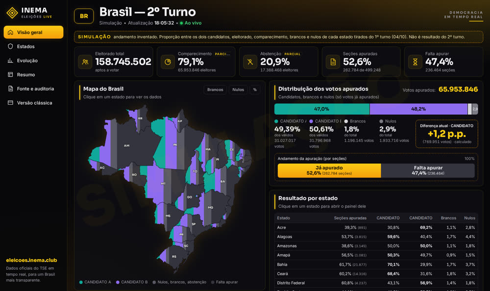
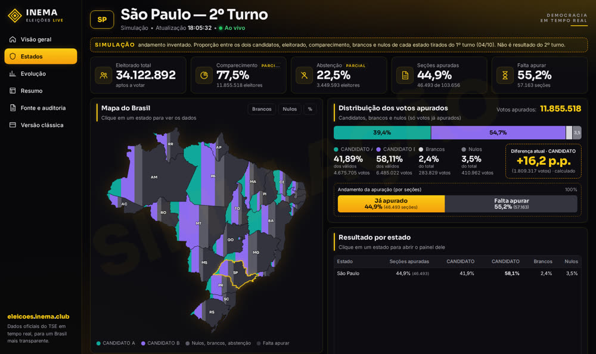

Un panel que lee los archivos públicos del TSE, verifica las cuentas y muestra cómo se llena cada estado cada 15 segundos.
INEMA Elecciones 2026 es un panel abierto para seguir el conteo de la segunda vuelta para Presidente con los datos oficiales del TSE (Tribunal Superior Electoral de Brasil, el órgano que organiza las elecciones en el país). Sirve para quien quiere ver el resultado de Brasil y de cada estado en un mapa, sin cifras inventadas. Un colector busca los archivos públicos del TSE cada 15 segundos, verifica las cuentas y publica archivos listos; el sitio solo lee esos archivos. Para seguirlo, basta con abrir eleicoes.inema.club; para ejecutar el tuyo, solo necesitas Python 3.
El colector lee el TSE y graba archivos; el contrato define el formato de esos archivos; el panel solo lee los archivos y dibuja la pantalla. El colector no sabe nada de la pantalla, y el panel nunca habla con el TSE.
Descarga solo el estado que cambió. Antes de publicar, verifica: votos de los candidatos = válidos; válidos + en blanco + nulos = total; las secciones nunca disminuyen. Si algo no cuadra, ese estado no se publica y queda el último valor válido.
Central, con un mapa real de Brasil que se llena estado por estado, y Clásica, con 4 estilos (noche, papel, noticiero y alto contraste). Haz clic en un estado y se abre su panel.
Botón Simulação (Simulación) en el menú: el conteo va de 0% a 100% en cerca de un minuto, con nombres ficticios y con el padrón, la participación, los votos en blanco y los nulos de cada estado tomados de la primera vuelta.
Quien visita el sitio solo descarga archivos listos. El único que habla con el TSE es el colector, una vez cada 15 segundos. El manifiesto (latest.json) es la lista de lo que está vigente ahora; siempre es el último archivo publicado, para que nunca apunte a un archivo que aún no llegó.
El colector pide el índice con etiqueta de versión (ETag). Si no hay novedades, el TSE responde "no cambió" y no se descarga nada.
Los porcentajes vienen del propio TSE. Lo que es cálculo del panel (la diferencia entre los dos, por ejemplo) aparece marcado como calculado.
Cada cifra publicada trae la hora oficial del TSE, la hora en que el colector la obtuvo, la versión y la huella digital (sha256) del archivo original.
Para solo seguir el conteo: nada, basta con abrir el sitio. Para ejecutar tu propio panel:
Versión 3.8 o más reciente. El colector y el servidor de prueba usan solo la biblioteca estándar: no hace falta instalar paquetes. Los comandos son para Linux o macOS (bash); en Windows, usa WSL.
python3 --versionPara descargar el proyecto.
git --versionSolo si quieres publicarlo en internet. Necesitas Node.js y wrangler con sesión iniciada en tu cuenta.
npx wrangler loginComandos reales del repositorio, en orden. Ejecútalos desde la carpeta del proyecto.
Clona el repositorio público.
git clone https://github.com/inematds/eleicoes2026 cd eleicoes2026
Levanta el servidor de prueba en segundo plano (el & al final) y abre el panel en modo de simulación acelerada. No necesita el TSE ni datos. El servidor no muestra nada en la pantalla; sigue ejecutándose hasta que lo detengas.
python3 coleta/servidor_local.py --pasta site --porta 8470 & # abre en el navegador: http://localhost:8470/?sim=1 # no lo detengas todavía: el paso 4 usa este servidor. Para detenerlo al final: pkill -f "porta 8470"
Lee los datos finales de la primera vuelta (elección 6257, la contienda de Presidente, 12 candidatos), lo verifica todo y publica en saida/teste1t/data. Si lo ejecutas de nuevo, el TSE responde "no cambió".
python3 coleta/coletor.py --saida saida/teste1t --eleicao 6257 --turno 1 --pleito 3220 --n-cand 0 --uma-vez
En el TSE, el «pleito» es la jornada de votación de un día (código 3220 = 04/10/2026), y cada jornada reúne varias elecciones, una por cargo en disputa (código 6257 = Presidente en la 1.ª vuelta); por eso son dos códigos distintos. --n-cand 0 desactiva la verificación de la cantidad de candidatos (en la 1.ª vuelta son 12) y --uma-vez ejecuta un solo ciclo. Los pasos 3, 4 y 5 necesitan internet: los dos primeros acceden a resultados.tse.jus.br y el 5 descarga de allí los datos de la 1.ª vuelta que sirven de base a la simulación.
Vigila el TSE cada 15 segundos (elección 6258, Presidente). Después apunta el sitio a los datos oficiales.
python3 coleta/coletor.py --saida saida/oficial --intervalo 15 & ln -sfn ../saida/oficial/data site/data # el sitio pasa a leer los datos oficiales sleep 20; cat saida/oficial/status.json # último ok, errores, bloqueos
El & al final de la primera línea deja el colector ejecutándose en segundo plano, junto con el servidor del paso 2; el sleep 20 espera el 1.er ciclo antes de mostrar el estado. Abre http://localhost:8470/ (sin ?sim=1): los datos aparecen después del 1.er ciclo, unos 15 segundos. Hasta que comience el conteo (25/10, alrededor de las 17 h), el panel muestra "Aguardando apuração" (Esperando el conteo) con todo en cero: es lo normal. Para detener el colector: pkill -f "saida/oficial".
Un servidor local imita al TSE con problemas a propósito: archivo corrupto, secciones que disminuyen, índice y archivos fuera de orden. El colector tiene que superarlo todo sin publicar nada incorrecto.
mkdir -p saida/tsefalso python3 coleta/servidor_local.py --pasta saida/tsefalso --porta 8471 & python3 coleta/simular.py --saida saida/simlixo/data --intervalo 6 --uma-vez --modo-tse saida/tsefalso & timeout 240 python3 coleta/coletor.py --saida saida/testemock --base http://127.0.0.1:8471/ --intervalo 3
El colector se detiene solo en 4 minutos (timeout 240), el tiempo que necesita la simulación para ir de 0% a 100%. Funcionó si saida/testemock/status.json muestra pendientes y bloqueos vacíos y grep BLOQUEIO saida/testemock/coleta.jsonl muestra un bloqueo de SP (archivo corrupto) y otro de RJ (las secciones disminuyeron); BLOQUEIO (bloqueo) es el nombre del evento en el registro. El simulador termina solo; después detén el servidor falso: pkill -f "porta 8471". Antes de empezar, el simulador descarga unos 29 archivos del TSE; si tu internet es lenta, aumenta el timeout.
Cambia el dominio en ferramentas/cloudflare/wrangler.toml por el tuyo y ejecuta el publicador: envía los datos a Cloudflare cada vez que cambian.
python3 ferramentas/publicar_cf.py --laco 20
wrangler es la herramienta de línea de comandos de Cloudflare; el publicador ejecuta npx --yes wrangler@4 deploy, por eso el npx wrangler login de los requisitos previos es obligatorio. Envía saida/oficial/data a la raíz del sitio y, si existe, la simulación en saida/simficticio/data a /simulacao/; así que el colector del paso 4 debe estar ejecutándose. Para publicar también la simulación, genérala antes: python3 coleta/simular.py --saida saida/simficticio/data --intervalo 60 --ficticio &. El publicador sigue ejecutándose y vigilando; para detenerlo, Ctrl+C. El dominio debe estar en una zona de tu cuenta de Cloudflare (zona = un dominio administrado en ella).
En municipios.inema.club cada estado aparece con sus municipios dibujados. La ciudad empieza gris y se vuelve roja o azul, según el color de quien lidera en ella; cuanto más fuerte el color, más mesas ya fueron escrutadas. En el panel, el ítem Municipios del menú y el botón Ver los municipios en el cuadro del estado llevan directo allí.
Elija el estado en los botones de arriba. Pase el mouse o el dedo por una ciudad para ver los números; haga clic para abrir su cuadro completo. Tiene zoom y búsqueda por nombre.
Barra con el total de cada candidato en el estado (suma de las ciudades ya escrutadas, marcada como cálculo de INEMA) y gráfico de la evolución a lo largo de la noche.
Lista de las 10 ciudades en tres órdenes: mayores (más electores), más escrutadas y 100% escrutadas.
Recolector, archivos y sitio propios. El recolector lee los 27 índices por estado del TSE y descarga solo las ciudades que cambiaron, primero las que llevan más tiempo esperando. Si se detiene, el panel principal no se ve afectado.
Cada ciudad pasa por las mismas reglas del panel. Una ciudad con una cuenta que no cuadra se queda con el último valor bueno; el resto del estado sigue.
Dibujo de los 5.570 municipios proveniente de la malla oficial del IBGE, vinculado al TSE por el código IBGE de cada ciudad.
Después del paso 1 de la guía (proyecto descargado). Comandos reales del repositorio, desde la carpeta del proyecto.
# 1. (opcional) el dibujo ya viene en el repositorio; esto lo rehace a partir de la malla del IBGE python3 municipios/gerar_malhas.py # 2. recolector del 2º turno (queda ejecutándose; cada 15 s) python3 municipios/coletor_mun.py --saida saida/municipios & # 3. sitio local ln -sfn ../../saida/municipios/data municipios/site/data python3 coleta/servidor_local.py --pasta municipios/site --porta 8471 & # abra: http://localhost:8471/ # o la simulación: http://localhost:8471/?sim=1
Detalles, pruebas con el 1er turno y límites conocidos: municipios/README.md.
Imágenes de la simulación (nombres ficticios). El día de la elección, los mismos paneles muestran los datos oficiales.


La primera versión se hizo para la segunda vuelta del 25/10/2026.